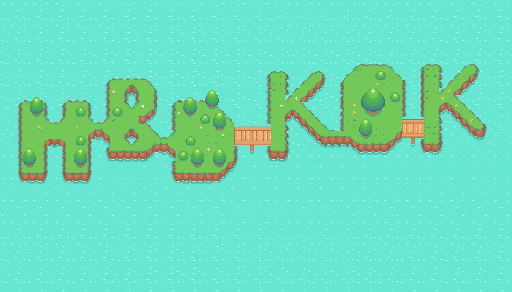
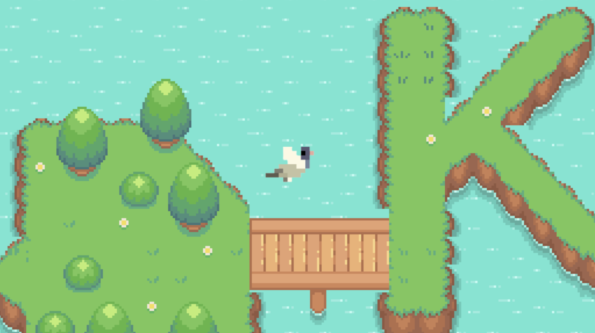

projects \\
Current Projects
Lecture Notes || long project
These are my notes for the courses I took at the University of Toronto, starting from Summer 2023.
Summer 2023 {
CSC311: Introduction to Machine Learning
MAT334: Complex Variables
# Last updated 14 June 2023
}
The principle is to leave minimal exercises for the readers. Please feel free to reach out to me with any corrections or suggestions you may have!
This website || long project
Working on this website using only HTML, CSS and Javascript. Most of the things I wrote are HTML. Javascript is copied from youtube, but copied nicely do you agree! I need to learn more Javascript. Also this website does not look good on mobile, the next thing I need to fix.
Investigation of Scientific CMOS Detectors for Astronomical Application || Dunlap Institute
Recent studies have demonstrated that commercial-off-the-shelf (COTS) scientific CMOS (sCMOS) cameras offer comparable or even superior performance to modern CCDs. However, it is still necessary to conduct performance evaluations on the latest-generation sCMOS chips. Moreover, the scientific community has shown interest in CMOS detectors for upcoming research programs, such as the proposed Cosmological Advanced Survey Telescope for Optical and UV Research (CASTOR) led by the Canadian Space Agency. The project aims to investigate the scientific potential of COTS sCMOS detectors, focusing on those with large pixel sizes (>10 microns/pixel) and ultra-low read noise levels suitable for photon-counting. Currently, no such sCMOS detectors are available in the instrumentation labs at Dunlap or DAA. The objective of the project is to develop a versatile, high-performance CMOS detector that can be utilized by all researchers at Dunlap.
Past Projects
Simple Flying Around Game
Currently working on a game for 🐦's birthday. Unlocked new skill of Javascript and finding RPG game assets and using Tiled to build a map with those assets. But I don't know why I lost my collision and foreground maps, so I counldn't do player-map collisions and boundaries and stuff.


Breakout Game in Assembly Language
Really interesting experience, mainly because Assembly is such a low level language that you need to draw object and update their positions pixel by pixel.
* long projects is a series of projects that last longer than a few weeks. short projects is a series of projects that last shorter than a few week.